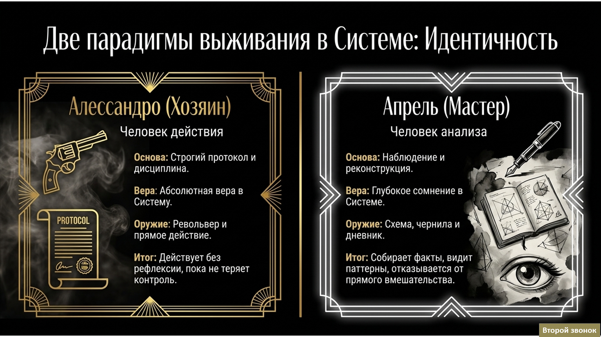
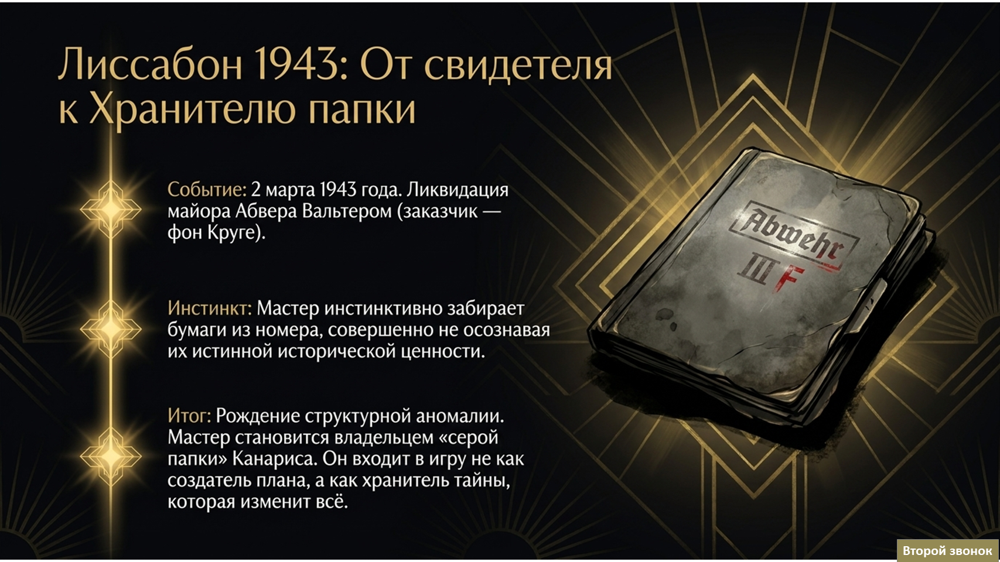

Сюжетная судьба Мастера
По мере развития сюжета герои постепенно обретали индивидуальность, а их судьбы совершали порой резкие повороты. Мне было важно, чтобы они не выглядели роботами, чья единственная функция — убивать и красть секреты, а были живыми, объёмными личностями.
Если взглянуть на их деяния беспристрастно, практически каждый из них — преступник. Однако тёмную сторону их профессиональной жизни неизменно компенсирует нечто светлое: музыка, живопись, а по слухам, даже вязание.
Предлагаю вам проследить одну из таких трансформаций на примере пути от Гостя к Мастеру.





Все права защищены. Разработка Лаборатории проекта «Второй звонок».